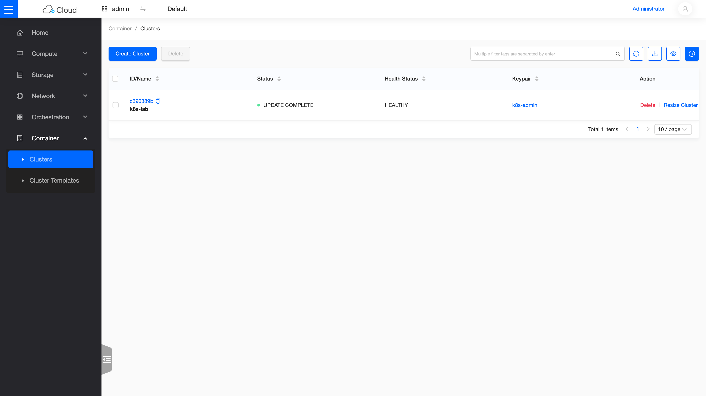
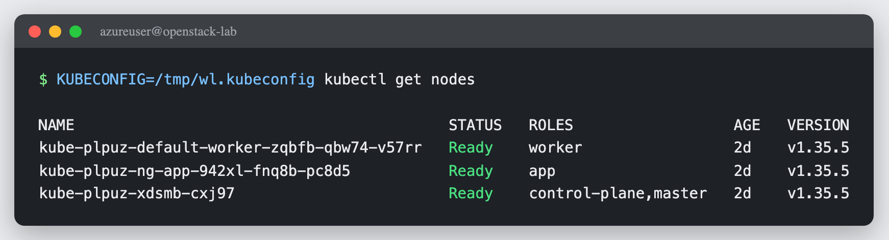

Day 8: E2E——開 workload cluster 跑起來¶
課程定位:用 Day 7 的 ClusterTemplate 真的
openstack coe cluster create開一座 K8s workload cluster,驗證三層互動並完成三項最終驗收:①kubectl get nodes全 Ready ②Service type=LoadBalancer拿到 Octavia LB ③ PVC 由 Cinder CSI 供裝。 本日踩了四個雷(microversion、CIDR 撞號、LB provider、Nova disk),全部記錄——這正是本次路線的價值:Sprint 1 死在無法診斷的 charm/image 斷代,本次每個地雷都能定位、能修。
原理與架構¶
1. 三層互動:一個 cluster create 背後發生什麼¶

今天的終點是一座真正的 Kubernetes——不是管理用的 kind,而是跑你工作負載的 workload cluster。整條生產線長這樣:
flowchart TB
A["openstack coe cluster create<br/>(你下的那一行指令)"]
A --> B["magnum-conductor(CAPI driver)<br/>在 kind 裡建立整組宣告:<br/>Cluster / OpenStackCluster /<br/>KubeadmControlPlane / MachineDeployment"]
B --> C["CAPI / CAPO controllers<br/>開始把宣告變成現實"]
C -->|"Neutron"| N["建 cluster 專用網路<br/>router、防火牆"]
C -->|"Octavia"| O["建 K8s API 的<br/>負載平衡器"]
C -->|"Nova"| V["開出 control-plane<br/>與 worker VM"]
V --> D["VM 開機後 cloud-init 執行 kubeadm<br/>→ K8s control plane 起來"]
D --> E["節點註冊時還「不知道自己是哪台 VM」<br/>(帶著 uninitialized 記號)"]
E --> F["OpenStack CCM 查出 VM 身分<br/>補上 providerID、拿掉記號"]
F --> G["CAPI 確認節點就緒<br/>→ cluster=CREATE_COMPLETE ✅"]三層 = Magnum(API/driver)→ CAPI/CAPO(kind,宣告式 reconcile)→ OpenStack(Nova/Octavia/Cinder 出實體資源)。
2. external cloud provider:providerID 與 CCM 的關鍵角色(本日兩個地雷的核心)¶
現代 CAPO 走 external cloud provider:kubelet 起來時不知道自己是哪台 OpenStack VM,以 node.cloudprovider.kubernetes.io/uninitialized:NoSchedule taint 註冊。OpenStack CCM 才去 Nova 問出這台 VM 的 UUID、寫進 Node.spec.providerID=openstack:///<uuid>、移除 taint。
連鎖後果:CCM 一旦掛掉,整座 cluster 卡死 —— 沒 providerID → CAPI 永遠「Waiting for a Node with providerID X to exist」;沒移除 taint → coredns/CSI-controller 排不進節點 → 一路 Pending。本日的地雷 2 正是 CCM 連不到 Keystone 而 crash 的實例。
3. LoadBalancer / PVC 怎麼落到 OpenStack¶
Service type=LoadBalancer:CCM 監到後呼叫 Octavia 建 LB(amphora),VIP 掛 ext-net FIP →EXTERNAL-IP。node 是 LB 的 member(NodePort)。- PVC:
openstack-cinder-csi動態供裝 → 建 Cinder volume → attach 到 pod 所在 node → mount。
今天的三項驗收,每一項背後都是一個你前幾天親手部署過的服務在動工:
| 你在 K8s 宣告的 | 幕後動工的 | 你在哪天認識它 |
|---|---|---|
節點(kubectl get nodes) |
Day 1–2 | |
Service type=LoadBalancer |
Day 4 | |
PVC |
Day 3 |
步驟¶
0. Pre-flight(reboot 後必查)¶
# management cluster 4 controllers Ready、magnum 連得到 kind、template 在
kubectl get providers -A
# keypair(cluster create 需要)
openstack keypair create k8s-admin > ~/k8s-admin.pem && chmod 600 ~/k8s-admin.pem
# ⚠️ Octavia o-hm0:host reboot 後 octavia-interface 常因比 OVN 早跑而 failed → o-hm0 DOWN
# K8s API LB 靠它,先修(見 Day6 solutions 的 drop-in 已讓它自動重試)
sudo systemctl reset-failed octavia-interface && sudo systemctl start octavia-interface
ip -br addr show o-hm0 # 應 UP + 10.1.0.x
1. 修 magnum.conf(建 cluster 前必做,預防地雷 1)¶
# /etc/kolla/config/magnum.conf (Kolla merge)
[nova_client]
api_version = 2.15 # 預設 2 太舊,driver 建 soft-anti-affinity server group 需 ≥2.15
2. 用「Azure-correct」template 開 cluster¶
Template 必帶三個 lab 專屬 label,每一個都是用地雷換來的:kube_tag 釘選 K8s 版本、fixed_subnet_cidr=10.6.0.0/24(不可與 API 的 10.0.0.4 同段,地雷 2)、octavia_provider=amphora(本 Octavia 沒啟用 amphorav2,地雷 3):
openstack coe cluster template create k8s-v1.34.8-azure \
--image ubuntu-24.04-v1.34.8 --external-network ext-net --dns-nameserver 8.8.8.8 \
--master-lb-enabled --master-flavor m1.medium --flavor m1.medium \
--network-driver calico --docker-storage-driver overlay2 --coe kubernetes \
--label kube_tag=v1.34.8 \
--label fixed_subnet_cidr=10.6.0.0/24 \
--label octavia_provider=amphora
openstack coe cluster create k8s-lab --cluster-template k8s-v1.34.8-azure \
--keypair k8s-admin --master-count 1 --node-count 1
3. 監控到 CREATE_COMPLETE¶
watch openstack coe cluster show k8s-lab -c status
# 盯 providerID 是否被 CCM 設上(關鍵健康指標):
SEC=$(kubectl -n magnum-system get secret -o name | grep kubeconfig | head -1)
kubectl -n magnum-system get $SEC -o jsonpath='{.data.value}' | base64 -d > /tmp/wl.kubeconfig
KUBECONFIG=/tmp/wl.kubeconfig kubectl get nodes -o jsonpath='{..providerID}'
4. 三項最終驗收¶
export KUBECONFIG=/tmp/wl.kubeconfig
# ① nodes Ready
kubectl get nodes
# ③ PVC → Cinder(先建 StorageClass,driver 沒附預設的)
kubectl apply -f - <<'EOF'
apiVersion: storage.k8s.io/v1
kind: StorageClass
metadata: {name: cinder, annotations: {storageclass.kubernetes.io/is-default-class: "true"}}
provisioner: cinder.csi.openstack.org
volumeBindingMode: Immediate
EOF
kubectl apply -f - <<'EOF' # PVC 1Gi + busybox 掛載(最小可用範本)
apiVersion: v1
kind: PersistentVolumeClaim
metadata: {name: day8-pvc}
spec:
accessModes: ["ReadWriteOnce"]
storageClassName: cinder
resources: {requests: {storage: 1Gi}}
---
apiVersion: v1
kind: Pod
metadata: {name: day8-pod}
spec:
containers:
- name: busybox
image: busybox
command: ["sh", "-c", "echo deepwave-day8 > /data/hello && sleep 3600"]
volumeMounts: [{name: vol, mountPath: /data}]
volumes:
- name: vol
persistentVolumeClaim: {claimName: day8-pvc}
EOF
kubectl get pvc # Bound;openstack volume list 出現 pvc-*
kubectl exec day8-pod -- cat /data/hello # 回 deepwave-day8 = volume 掛載+持久化成功
# ② LoadBalancer → Octavia
kubectl create deploy web --image nginx --replicas 2
kubectl expose deploy web --port 80 --type LoadBalancer --name web-lb
kubectl get svc web-lb # EXTERNAL-IP(ext-net FIP)
curl http://<EXTERNAL-IP>/ # host 內可打(Azure FIP 僅 host 內有效)
驗收 checkpoint¶
逐項驗證,全部符合判準才算完成今天。「本課環境的結果」欄是我們實測的參考值——你的 IP、耗時等數字會不同,但判準必須成立:
| 驗證 | 判準 | 本課環境的結果 |
|---|---|---|
| cluster | CREATE_COMPLETE / HEALTHY | 符合 |
| 驗收① nodes | control-plane + worker 全 Ready、有 providerID | v1.34.8,openstack:///... |
| CCM / CSI / calico | 全 Running(providerID 設好、taint 移除) | CCM 0 重啟 |
| 驗收② LoadBalancer | Octavia amphora LB ACTIVE/ONLINE、EXTERNAL-IP、curl 200 | 172.24.4.183,curl ×6 = 200 |
| 驗收③ PVC | Bound、Cinder volume in-use、資料持久化 | pvc-f99513ec in-use,cat 回 deepwave-day8 |
| 總驗收 | 前兩次嘗試卡死的三大項(Octavia/Cinder/Magnum)全數走通 | 三項全數通過 |
地雷記錄(本日四連)¶
地雷 1:nova_client api_version=2 太舊 → server group soft-anti-affinity 被拒(CREATE_FAILED 秒失敗)¶
cluster create 8 秒就 CREATE_FAILED,magnum-system 無任何 CAPI CR。conductor log:nova.server_groups.create(policies=['soft-anti-affinity']) → Nova 400 'soft-anti-affinity' is not one of ['anti-affinity','affinity']。driver 用 magnum.common.clients 建 nova client,Magnum [nova_client] api_version 預設 2(=2.1),而 soft-anti-affinity 需 microversion ≥ 2.15。修:magnum.conf 設 api_version = 2.15(別設 ≥2.64,那之後 server_group API 從 policies list 改成 policy,driver 還用 list)。
地雷 2:fixed_subnet_cidr 與 OpenStack API IP 撞號 → CCM CrashLoopBackOff → cluster 卡死(solutions 級,本日最大地雷)¶
cluster 一直 CREATE_IN_PROGRESS、VM 都 ACTIVE 但 Machine 停在 Provisioned。根因:driver 的 fixed_subnet_cidr 預設 10.0.0.0/24,與 OpenStack API endpoint 10.0.0.4(host)同段 → 節點把 10.0.0.4 當 on-link、ARP 不到真 Keystone → CCM crash → 無 providerID → 卡死。修:label fixed_subnet_cidr=10.6.0.0/24(避開 10.0.0.4,也避開 pod 10.100/svc 10.254/lb-mgmt 10.1/ext-net 172.24)。完整記錄見排錯手冊:CAPI 子網撞 API IP。
地雷 3:octavia_provider 預設 amphorav2,但 Octavia 只啟用 amphora → LoadBalancer 失敗¶
Service type=LoadBalancer 一直 pending,CCM 報 Octavia 400 Provider 'amphorav2' is not enabled。driver 的 CCM cloud.conf lb-provider 由 label octavia_provider(預設 amphorav2)決定,而本 Octavia enabled_provider_drivers 只有 amphora,ovn。修:label octavia_provider=amphora(現有 cluster 熱修:patch workload cloud-config secret 的 lb-provider=amphora + 重啟 CCM)。
後續變動
這裡的 octavia_provider=amphora 在 Day 22 地雷 1 會受影響:那天全量 precheck 逼著把 octavia_provider_drivers 收斂成只剩 ovn,amphora 從此不再可選。若讀到 Day 22 後還要沿用本章的 amphora 路線,先看那段的取捨說明。
地雷 4:Nova disk 被 leftover VM 佔滿 → amphora No valid host¶
改用 amphora 後 LB 仍失敗,Octavia amphora build 報 Nova No valid host was found。hypervisor free_disk_gb=1、local_gb_used=121/122:Day 2-4 遺留的 SHUTOFF VM(vm-cirros/ubuntu/web1/web2)+ 舊 LB 的 amphora 仍佔用 Nova 的 flavor-disk 配額(SHUTOFF 不佔 RAM/CPU 但佔 disk 帳)。修:刪掉 leftover(openstack server delete demo VM、loadbalancer delete --cascade 舊 lb2/lb-ovn)→ 釋放 36GB → amphora 排得進。教訓:單機 lab 要定期清 leftover,Nova disk 用 flavor 總和計帳、SHUTOFF 也算。
Sprint 1 未完成項:全數補完¶
Sprint 1 的三大敗因,在 Kolla + Magnum-CAPI 路線全部解決:
| Sprint 1 敗因 | 本 Sprint 結果 |
|---|---|
| Octavia:Canonical charm amd64 斷代(裝不了) | ✅ Day 4 amphora LB round-robin;Day 8 workload Service type=LoadBalancer 拿到 Octavia LB |
| Cinder LVM:LXD device-mapper 限制 | ✅ Day 3 LVM;Day 8 PVC 由 Cinder CSI 動態供裝 |
| Magnum:heat driver 內嵌 image URL 全失效 | ✅ CAPI driver + capo-image-elements 維護的 node image,cluster CREATE_COMPLETE |
從儀表板看成果¶

Magnum 的 cluster 列表(Skyline 檢視):k8s-lab,狀態 UPDATE COMPLETE、健康狀態 HEALTHY——十一天的成果濃縮成這一列。

同一座 cluster,從 kubectl 看:三個節點全 Ready(control-plane、worker,加上 Day 9 的 app node group)。這裡用的是暫存的 kubeconfig(KUBECONFIG=/tmp/wl.kubeconfig 只影響這一條指令)——查別人的 cluster 時養成這個習慣,不會弄髒自己的 kubectl 設定。
延伸閱讀¶
想往下深挖,從這幾份開始:
- K8s 官方:Cloud Controller Manager 概念 —— 為什麼 K8s 需要一個「懂雲」的元件?CCM 的職責邊界在這份講得最清楚。
- cloud-provider-openstack 專案 —— 本章部署的 OCCM 與 Cinder CSI 都住在這個 repo;文件目錄裡有各元件的設定參考。
- K8s 官方:Persistent Volumes —— PV/PVC/StorageClass 的權威定義;本章「PVC 自動變出 Cinder volume」的 K8s 側原理。
- K8s 官方:Service ——
type=LoadBalancer到底承諾了什麼,以及它如何委託給雲(我們的 Octavia)實現。
下一步(Day 9)¶
Day-2 operations:用 k8s-v1.34.8-azure template 驗 cluster 升版(CAPI rolling,如 v1.34→v1.35,需先上傳對應 node image)、node group、cluster-autoscaler。開工前照 Pre-flight §0 確認 kind/magnum/octavia o-hm0 就緒。
Kubernetes 標誌為 CNCF(Linux Foundation)之商標;OpenStack 吉祥物為 OpenInfra Foundation 官方資產。此處均作社群教學用途。